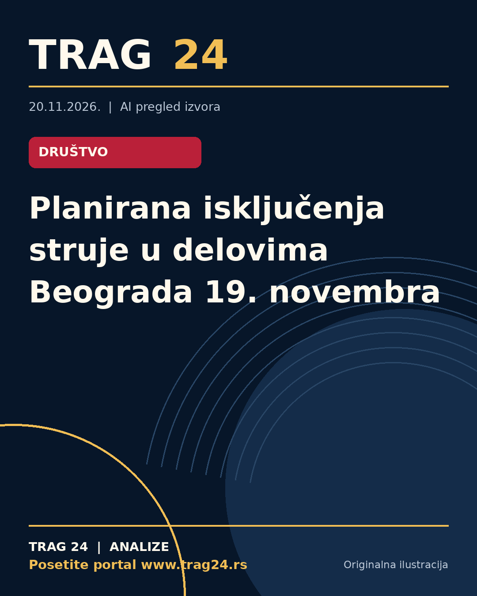

Planirana isključenja struje u delovima Beograda 19. novembra

ŠTA SE DOGODILO
Elektrodistribucija Srbije je najavila planirana isključenja električne energije u nekoliko delova Beograda tokom dana 19. novembra radi izvođenja planiranih radova na mreži.
HRONOLOGIJA
Prema informacijama dostupnim za ovaj dan, isključenja su raspoređena u raznim vremenskim intervalima. Prvo najveće isključenje počinje u 08:30 i traje do 13:30, obuhvatajući ulice kao što su Atanasija Pulje, Cvijićeva, Geteova, Jakšićeva, Krajiška, Makedonska, Metohijska, Partizanska, Slovenska, Solunska, Železnička kolonija i naselje Plavi Horizonti, ulica Milana Rešetara. Drugo planirano isključenje traje od 09:00 do 12:00 u naselju Šopić (ulica Janka Stajčića 53-113 i 132-152, zaseok Krivaja 1). Takođe, u periodu od 09:00 do 15:00 bez struje je naseljeno mesto Kadina Luka u opštini Ljig, zaseok Ćirjanići.
ŠTA NAVODE IZVORI
Iz Elektrodistribucije Srbije je potvrđeno da su isključenja rezultat planiranih radova na elektroenergetskoj mreži. Kurir detaljno navodi ulice i vremenske periode kada će doći do prekida u snabdevanju električnom energijom, dok Informer samo kratko najavljuje isključenja bez navođenja preciznih lokacija ili termina.
ŠTA JE POTVRĐENO
Potvrđeno je da se isključenja odnose na planirane aktivnosti održavanja i da će obuhvatiti određene delove grada u vremenskom okviru koji je ranije najavljen. Ne postoje potvrđene informacije o vanrednim prekidima ili nepredviđenim problemima tokom dana.
ŠTA NIJE POTVRĐENO
Iz dostupnih izvora nije potvrđeno da će biti dodatnih isključenja ili da će planirani radovi biti produženi. Takođe nema podataka o mogućim problemima sa elektrodistributivnom mrežom koji bi mogli uticati na trajanje ili broj isključenja.
ŠTA OSTАJE OTVORENO: Ostaje nejasno da li će biti dodatnih informacija i eventualnih promena u rasporedu isključenja tokom dana, kao i kako će se održavanje mreže odraziti na snabdevanje u drugim delovima grada. Građani i korisnici usluga se mogu dalje informisati preko zvaničnih kanala Elektrodistribucije Srbije.
Izvori
- https://informer.rs/drustvo/vesti/1171317/struja-iskljucenje-beograd
- https://www.kurir.rs/vesti/beograd/10166923/bez-struje-danas-u-beogradu
Ova analiza je pripremljena uz pomoć veštačke inteligencije na osnovu javno dostupnih izvora. Navodi izvora nisu nužno nezavisno potvrđeni.